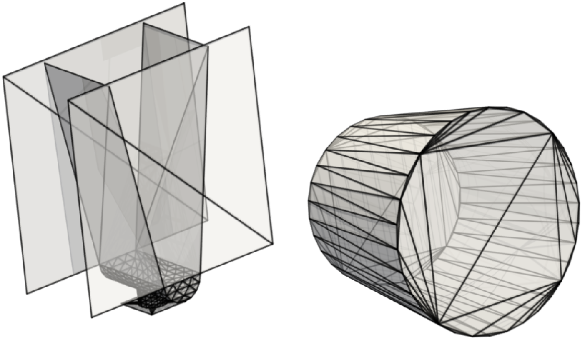

This post gives further details to the paper Boundary Graph Neural Networks for 3D Simulations, which was accepted for presentation at the Thirty-Seventh AAAI Conference on Artificial Intelligence (AAAI-23).
Technical Appendix: Download
Overview
Our aim
We want to learn complex 3D particle simulation trajectories from an initial state over many, many timesteps.
Seminal research on this topic was already carried out by Sanchez-Gonzalez et al. [2020]. They showed impressively how well particle simulation
trajectories can be learned by Graph Neural Networks (GNNs).
In this work we want to go one step further. We aim to learn 3D simulations by Graph Neural Networks (GNNs) towards industrially relevant setups, such as hoppers and rotating drums. This means we have to model complex geometric boundaries with triangularized surface areas. However, such triangularized surface areas are notoriously difficult to model by machine learning approaches due to their heterogeneity with respect to size and orientation.
Exemplary setups from daily industrial use cases, hopper (left) and a rotating drum (right).

This task is far beyond trivial. The following examples show models for which particle - particle interactions are already learned pretty well as in the work of Sanchez-Gonzalez et al. [2020], but particle - wall interactions are not modeled correctly :


In this work, we introduce an effective theory to model particle-boundary interactions,
from which we derive a new approach to accurately and effectively model granular flow
processes within triangularized boundary surfaces.
In physics, effective theories allow the description of phenomena within much simpler frameworks
without a significant loss of precision. The basic idea is to approximate a physical system by
factoring out the degrees of freedom that are not relevant in the given setting and problem to solve.
The following image shows, how we want to make use of this principle for effectively modelling granular flow
processes with boundaries:

How do we learn simulations?
Our research is based on particle simulations from the particle simulator LIGGGHTS, which is based on the Discrete Element Method (DEM) and which is able to take complex mesh-based wall geometries into account. We consider trajectories from this simulator as our ground truth simulations.
The core in learning to predict such simulations, is to accurately learn a time-transition model, which predicts from a previous state (or some previous states) the next state. For this, we basically follow Sanchez-Gonzalez et al. [2020], i.e. our GNN predicts the acceleration of particles and semi-implicit Euler integration is used to obtain the next particle velocities and positions:
\[\begin{align} \dot{\boldsymbol{x}}^{t+1} &=\dot{\boldsymbol{x}}^{t}+\Delta t\; \ddot{\boldsymbol{x}}^{t} \\ \boldsymbol{x}^{t+1} &=\boldsymbol{x}^{t}+\Delta t\; \dot{\boldsymbol{x}}^{t+1} \, \end{align}\]where \(\boldsymbol{x}\) represents the position of a particle, \(\dot{\boldsymbol{x}}\) represents the particle velocity and \(\ddot{\boldsymbol{x}}\) represents the particle acceleration.
Boundary Graph Neural Networks (BGNNs)
BGNNs extend traditional GNNs, such that the networks are capable of learning particle - wall interactions by dynamically inserting (virtual particle) nodes, if a particle is near a wall. Since we are focusing on the 3D domain, we do not sample all boundary surfaces and represent theses surfaces as static particles across the whole time. Instead we insert additional nodes into the graph (representing virtual particles) if a boundary surface area is near a particle. Additionally, we enrich the feature space of GNN inputs in order to make e.g. wall normal vector information available for the graph network to learn a time transition model. The images below visualize the basic idea of BGNNs (measuring distances between walls and particles, insertion of virtual particle for wall if distance is smaller than a threshold):

Every particle “sees” at most one virtual particle representing the boundary surface area, namely that particle which has the shortest distance. Since interaction strength decreases continuously with the distance, it is ensured that for every particle-boundary interaction that boundary point with the largest contribution is considered.
Does it work?
We apply BGNNs to hoppers and rotating drums and use two different materials. For the cohesive material, there are large cohesive forces between the particles, while for the non-cohesive material, we are not making use of these additional forces. An exemplary cohesive material could be asphalt in a paver, whereas an exemplary non-cohesive material could be gravel. For both materials we do not assume additional cohesion between particles and walls. Other than that there are (rolling) friction and restitution forces between particles themselves and between particles and walls.
Models with a Cohesive Material


Models with a Non-Cohesive Material


BGNNs have learned to accurately reproduce 3D granular flows over hundreds of thousands of simulation timesteps, and most notably particles completely stay within the geometric objects without using handcrafted conditions or restrictions.
Out-of Distribution (OOD) Experiments
We further considered the case of OOD settings for the drum and the hopper. Compared with training and validation sets we changed the geometry for the test set samples.
Drum
The following upper animation shows a typical example encountered in training, while the lower animation is an OOD test example.
For OOD test samples the length of the cylinder has increased compared to training and test samples.


Hopper
The following upper animation shows a typical example encountered in training, while the lower animation is an OOD test example.
For OOD test samples the outlet hole size has decreased and the inclination angle has increased.


Resources
Code release: will be released here. We are currently working on it.
Data: We are currently investigating, how we can best provide data.
Correspondance
Blog post written by Andreas Mayr (mayr[at]ml.jku.at) and Johannes Brandstetter (brandstetter[at]ml.jku.at).